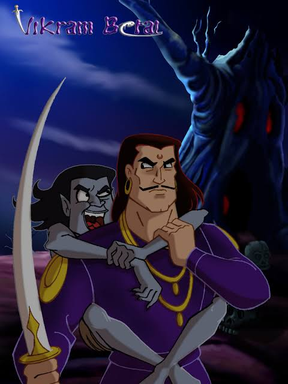

6.વાસ્તવિક વર કોણ ? |
બેતાલને પોતાની સાથે લઈ જવાના ઘણા અસફળ પ્રયાસો છતાં, રાજા વિક્રમાદિત્યએ હાર ન માની. તેથી, રાજા વિક્રમાદિત્ય ફરીથી ઝાડ પાસે ગયા અને બેતાલને પીઠ પર લટકાવવા લાગ્યા. પોતાની સ્થિતિ પ્રમાણે બેતાલે ફરીથી રાજા વિક્રમને વાર્તા કહેવાનું શરૂ કર્યું. આ વખતે વાર્તા છે - અસલી વર કોણ છે?
સદીઓ જૂની વાર્તા છે કે ઉજ્જૈન શહેરમાં મહાબલ નામનો રાજા રાજ કરતો હતો. રાજા ખૂબ જ બહાદુર અને દયાળુ હતો. તેમને એક પુત્રી હતી, જેનું નામ મહાદેવી હતું. મહાદેવી ખૂબ જ સુંદર અને નમ્ર છોકરી હતી. જ્યારે તે લગ્ન કરવા યોગ્ય બની ત્યારે રાજા મહાબલે તેના માટે યોગ્ય વરની શોધ શરૂ કરી.
એક પછી એક ઘણા રાજકુમારો રાજકુમારી સાથે લગ્ન કરવા ઈચ્છતા રાજા પાસે આવ્યા, પણ રાજાને કોઈ ગમ્યું નહિ. રાજાએ રાજકુમારી સાથે લગ્ન કરવા માટે એક જ શરત રાખી હતી કે તેની પુત્રીનો ભાવિ પતિ દરેક બાબતમાં નિષ્ણાત હોવો જોઈએ. આ રીતે ઘણા દિવસો વીતી ગયા, પરંતુ રાજાને તેની પુત્રી માટે કોઈ યોગ્ય વર મળ્યો નહીં.
એક દિવસ, જ્યારે રાજા તેના દરબારમાં બેઠો હતો, ત્યારે એક રાજકુમાર ત્યાં આવ્યો અને કહ્યું, "હું રાજકુમારી મહાદેવી સાથે લગ્ન કરવા માંગુ છું." આ સાંભળીને રાજાએ કહ્યું, "હે રાજકુમાર, હું મારી પુત્રીના લગ્ન એવા વ્યક્તિ સાથે કરીશ કે જેમાં તમામ ગુણો હશે." આના પર રાજકુમારે જવાબ આપ્યો, "મારી પાસે એવો રથ છે, જેમાં બેસીને કોઈ પણ ક્ષણમાં ગમે ત્યાં પહોંચી શકે છે." આ સાંભળીને રાજાએ કહ્યું, “ઠીક છે તમે થોડા દિવસ રાહ જુઓ. હું રાજકુમારીને પૂછીશ અને તને જવાબ આપીશ.”
|  |
થોડા દિવસો પછી બીજો રાજકુમાર ત્યાં પહોંચ્યો. રાજાએ કહ્યું, “હું ત્રિકાલદર્શી છું અને ભૂતકાળ, વર્તમાન અને ભવિષ્ય જોઈ શકું છું. હું ઈચ્છું છું કે રાજકુમારી મારી સાથે લગ્ન કરે.” રાજાએ તેને પણ રાહ જોવા કહ્યું.
થોડા દિવસો પછી, બીજો રાજકુમાર રાજા મહાબલ પાસે તેની પુત્રીનો હાથ માંગવા આવ્યો. રાજાએ તેને પૂછ્યું, તારામાં એવા કયા ગુણ છે કે હું મારી પુત્રીને તારી સાથે પરણાવી દઉં? રાજકુમારે કહ્યું, “રાજા, હું તીરંદાજીમાં નિપુણ છું. મારા જેવો તીરંદાજ ક્યાંય નથી." રાજાએ તેને કહ્યું, “બહુ સારું! રાજકુમાર, તમે થોડા દિવસ રાહ જુઓ. મારી દીકરી સાથે વાત કર્યા પછી હું તમને જવાબ આપીશ.
હવે રાજા મૂંઝવણમાં હતો કે ત્રણેય રાજકુમારો પ્રતિભાશાળી હતા, પરંતુ તે ત્રણેય રાજકુમારી સાથે લગ્ન કરી શક્યો નહીં. તેથી હવે પ્રશ્ન એ હતો કે રાજકુમારીએ કોની સાથે લગ્ન કરવા જોઈએ.
બીજી તરફ, એક ભયંકર રાક્ષસ રાજકુમારી મહાદેવી પર નજર રાખી રહ્યો હતો અને એક દિવસ જ્યારે તેને તક મળી ત્યારે તે રાજકુમારીને લઈ ગયો. આ સમાચાર મહેલમાં ફેલાતાં જ રાજા, રાણી અને ત્રણ રાજકુમારો એક જગ્યાએ ભેગા થયા. ત્રિકાલદર્શી રાજકુમારે કહ્યું કે તે રાક્ષસ રાજકુમારીને વિંધ્યાચલ પર્વત પર લઈ ગયો છે. આના પર પ્રથમ રાજકુમારે કહ્યું, “હું મારો રથ લઈને આવું છું. આપણે બધા તેના પર બેસીને વિંધ્યાચલ જઈ શકીએ છીએ.
ત્રીજા રાજકુમારે ધનુષ્ય અને બાણ કાઢીને કહ્યું, "હું તે રાક્ષસને મારી નાખીશ."
આ પછી, ત્રણેય રાજકુમારો રથ પર બેઠા અને વિંધ્યાચલ પર્વત તરફ પ્રયાણ કર્યું. રાક્ષસને જોતાની સાથે જ તીરંદાજ રાજકુમારે કુશળતાપૂર્વક તેને મારી નાખ્યો અને રાજકુમારીને બચાવીને તેને મહેલમાં પાછી લાવ્યો.
આ વાર્તા સંભળાવ્યા પછી, બેતાલે રાજા વિક્રમને કહ્યું, “રાજા, ત્રણેય રાજકુમારોએ રાજકુમારીને બચાવવામાં ફાળો આપ્યો હતો. તો હવે તમે જ કહો કે રાજકુમારીએ કોની સાથે લગ્ન કરવા જોઈએ? રાજન, મેં સાંભળ્યું છે કે તમે હંમેશા ન્યાય કરો છો. જલ્દી જવાબ આપો, નહીં તો હું તમારા માથાના ટુકડા કરી દઈશ."
આના પર રાજા વિક્રમાદિત્યએ જવાબ આપ્યો કે રાજકુમારીના લગ્ન તીરંદાજ રાજકુમાર સાથે કરવા જોઈએ, કારણ કે તેણે રાક્ષસ સામે લડીને રાજકુમારીને બચાવી હતી અને અન્ય બે રાજકુમારોએ માત્ર તેને મદદ કરી હતી.
બસ પછી શું! રાજા બોલતાની સાથે જ ભમરો તેની પીઠ પરથી ઉડી ગયો અને ફરીથી ઝાડ પર લટકી ગયો.